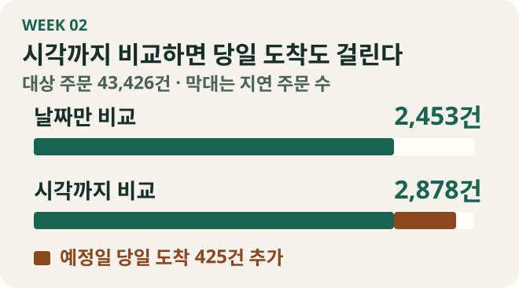
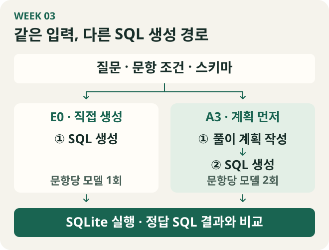
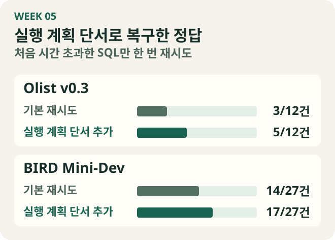

방성민 · Text-to-SQL 스터디 · 1–5주차
SQL을 쓰기 전에, 한 행의 뜻부터
“같은 상품을 다시 산 고객이 몇 명이야?” Olist 주문 데이터로 이 질문을 풀었을 때, 집계 기준에 따라 답이 43명에서 1,281명까지 달라졌다. 같은 주문에 같은 상품을 두 개 담은 경우를 재구매로 볼지, 다른 주문으로 산 경우만 셀지에 따라 결과가 달랐다.
스터디 후반에는 비슷한 문제를 모델이 만든 SQL에서 만났다. 기준일의 불만 리뷰 비율과 세 가지 증감폭을 물었는데, SQL이 계산에 쓴 중간값까지 일곱 열을 반환했다. 데이터를 볼 때 썼던 질문을 이번에는 모델에게 건넸다. 결과의 한 행은 무엇을 뜻하고, 그 행에는 어떤 열이 있어야 할까?
1주차 · 같은 상품을 다시 산 사람을 어떻게 셀까
사전 과제로 브라질 이커머스 주문 데이터 Olist의 CSV를 SQLite에 적재했다. 테이블을 연결하는 키를 ERD로 그린 뒤 미리보기와 통계 화면을 만들었다. 주문 테이블에는 99,441건이 있었고, 상품과 결제 테이블에는 각각 112,650행과 103,886행이 있었다. 세 테이블에서 같은 order_id를 찾을 수 있지만, 주문 테이블의 한 행은 주문 한 건, 결제 테이블의 한 행은 결제 한 건이었다.
2018년 6~8월에 같은 상품을 다시 산 고객을 세면서 주문과 사람을 구분하는 키부터 확인했다. 주문별 customer_id를 쓰면 같은 사람의 다른 주문을 묶을 수 없었다. customer_unique_id로 사람을 연결하자 별도 주문으로 같은 상품을 다시 산 고객이 나왔다. 한 주문 안의 여러 상품까지 허용했을 때는 집계 범위가 달라졌다.

결제액에서도 한 행의 뜻이 숫자를 바꿨다. 한 주문에 상품이 3행, 결제가 2행인 경우를 생각해 보면, 두 테이블을 주문 ID로 조인했을 때 결제 두 건이 상품 세 건에 각각 붙어 6행이 된다. 이 상태에서 결제액을 더하면 결제 한 건을 세 번 센다. 실제 Olist에서도 상품과 결제를 바로 조인하자 합계가 16,008,872.12에서 20,308,134.71로 약 27% 커졌다. 여러 카테고리가 섞인 주문 786건을 카테고리별로 집계하려면 결제액을 나누는 기준도 따로 정해야 했다.
데이터에 있는 열이 무엇을 설명하는지도 살폈다. 구매자의 유입 채널을 찾다가 별도 마케팅 데이터의 origin을 확인했는데, 판매자 후보의 유입 경로를 담은 열이었다. 거주 주별 재구매율은 계산할 수 있어서 별도 질문으로 풀었다. 사전 과제에는 수령 후 30일 이내 재주문율, 신규·기존 고객 결제액, 발송이 늦어진 주문에서 놓친 요인을 묻는 세 질문을 남겼다.
업무 용어를 데이터의 단위로 옮기기
재주문을 정의할 때는 어느 주문을 시작점으로 삼는지, 같은 사람을 어떤 키로 찾는지, 이후 주문을 며칠 동안 관찰할 수 있는지까지 적어야 했다. 이런 계산 기준을 시맨틱 레이어에서 어떻게 다루는지 살펴보고, Olist SQL과 실행은 되지만 결과가 틀리는 사례를 포함해 7장짜리 학습지와 HTML을 만들었다. LLM의 SQL 생성, 에이전트와 자가검증, 평가셋, 온톨로지·MCP·플러그인의 역할도 학습지에 정리했다.
팀의 첫 회의에서는 SQL 생성과 평가셋부터 만들기로 했다. 내가 세어 본 재구매 수와 결제액은 질문의 정의가 숫자를 바꾼다는 사례였다. 그 차이를 모델이 만든 SQL에서도 확인하려면, 질문을 채점할 수 있는 답부터 마련해야 했다.
2주차 · 예정일 당일에 도착하면 지연일까
“예상 도착일보다 늦은 주문이 얼마나 되나요?”를 팀 평가셋의 bang-002 문항으로 만들었다. 2017년에 구매한 배송 완료 주문 중 실제 도착일과 예상 도착일이 모두 있는 43,426건을 대상으로 삼았다. 비교에서 시각을 떼어 내자 예정일 당일에 도착한 425건이 지연 건수에서 빠졌다. 문항에는 날짜로 비교한다는 기준을 적었다. 모델 시연에서는 “다음 날 이후”를 다음 날이 빠지는 뜻으로 읽은 경우가 있어, 예정일 다음 날에 도착한 주문도 포함한다고 풀어 썼다.

bang-001에서는 2017년에 구매해 배송 완료된 주문 43,428건을 고르고, 연결된 결제 행을 수단별로 한 번씩 더했다. 날짜의 상한은 2018-01-01 미만으로 두어 12월 31일 하루를 모두 포함했다. 신용카드 결제액은 5,386,253.99였다. 1주차에 봤던 조인 문제를 그대로 적용해 상품 테이블을 추가하니 같은 항목의 금액이 6,786,494.89로 커졌다. 두 문항 모두 질문, 용어 정의, 필요한 테이블, 정답 SQL, 예상 출력, 검산 방법을 한 세트로 제출했다. SQLite로 정답 SQL을 실행한 뒤 별도 Python 계산과 결과를 대조했다.
실행 성공과 정답 일치를 따로 기록하기
상품을 조인해서 부풀린 금액도 DB는 정상적으로 반환했다. 그래서 SQL이 돌아갔는지는 실행 성공으로, 반환된 결과가 정답 SQL의 결과와 일치했는지는 **실행 정확도(EX)**로 따로 기록했다. EX가 잡아낼 수 있는 오류는 현재 데이터에도 달려 있었다. bang-002에서 배송 완료 조건을 빼도 해당 데이터의 결과는 같았다. 이런 경우에는 EX가 일치해도 문항 조건을 SQL에서 직접 확인할 필요가 있었다.
개인 실습으로는 Text-to-SQL 방법 10종을 같은 평가틀에서 비교할 코드를 준비했다. Zero-shot과 Few-shot부터 검색과 스키마 연결, 문제 분해, 구조화된 계획, 문법 제약, 실행 후 수정, 후보 결과의 합의, LoRA 미세조정, 역할을 나눈 에이전트까지 비교 범위를 정했다. BIRD Mini-Dev SQLite 60문항을 고정하는 절차도 만들었다. 이 주의 기록에서 확인할 수 있는 산출물은 실습 코드와 실행 설계까지다.
배송 지연 문항에서는 정의를 고쳐 질문에 담았다. 다음으로는 정의를 전달받은 모델이 그 기준을 어떤 순서로 적용하는지 확인하고 싶었다.
3주차 · 신규 고객을 찾기 전에 1분기로 자르면
1주차에 적은 “신규·기존 고객의 2018년 1분기 결제액”을 팀 리뷰를 받아 bcds-002로 다듬었다. 1분기 주문만 남기고 첫 구매를 찾으면 그보다 앞선 구매가 사라진다. 그래서 먼저 전체 배송 완료 구매 이력에서 고객별 첫 구매를 찾고, 결제액을 더할 때만 1분기 주문을 골랐다. 주문별 결제 합계를 구한 뒤 그룹별 고유 고객 수, 총 결제액, 1인당 결제액을 반환했다.
bcds-001은 카테고리별 수령 후 30일 재주문율을 묻는 문항이다. 비교하는 두 해 모두 3~7월에 받은 주문으로 범위를 맞췄다. 고객별 첫 수령 주문을 기준으로 이후 720시간 이내에 구매한 별도의 배송 완료 주문을 셌다. 2018년 대상 고객이 50명 이상인 카테고리만 순위에 넣었을 때는 moveis_sala가 118명 중 3명(2.54%)으로 1위였다. 최소 인원 기준을 풀자 27명 중 1명이 다시 주문한 수입 서적 카테고리가 1위가 됐다. 두 문항의 SQL과 별도로 작성한 Python 계산을 대조했다.
같은 질문으로 SQL을 쓰는 두 경로
“신규”를 어떤 사람으로 볼지는 문항에서 정했다. SQL을 만드는 모델은 그 정의를 보고 전체 이력에서 첫 구매를 찾은 다음 대상 분기를 골라야 했다. 이처럼 같은 조건을 줘도 계산 순서에서 차이가 생길 수 있어서, 10월 27일 발표에서는 팀 실행기의 E0와 A3를 비교하는 방법을 설명했다. 둘 다 질문·문항 조건·스키마를 받고, A3에는 SQL을 만들기 전에 풀이 계획을 작성하는 호출이 하나 더 들어간다.

A3의 첫 호출에서는 테이블, 조인 키, 필터, 집계 단위와 계산식, 정렬·개수 제한을 적게 했다. 두 번째 호출에서는 원래 입력과 그 계획을 함께 보내 SQL 하나를 만들었다. Plan-and-Solve, Least-to-Most, DIN-SQL을 읽을 때도 각 방식이 어떤 중간 결과를 남기고 다음 단계에서 무엇을 받는지 비교했다. 이 구조에서는 계획과 생성 SQL을 둘 다 기록하므로, 기준이 어느 단계에서 빠졌는지 확인할 수 있었다.
데이터 사전을 덧붙인 B1-b 예비 실행에서는 v0.1 네 문항이 모두 실행됐고 세 문항이 정답이었다. 기존 기준선과 맞힌 문항이 같고 CLI 버전도 달라 사전의 효과는 판단을 보류했다. 10월 30일에는 v0.2 30문항을 E0와 A3로 각 한 번 풀었다. 둘 다 23개를 맞혔다. A3에서 세 문항이 새로 맞고 세 문항이 새로 틀렸으며, 모델 호출은 30회에서 60회로 늘었다. 합계는 같았지만 문항별 결과가 바뀌어서, 같은 비교를 반복해 어떤 변화가 다시 나타나는지 보기로 했다.
4주차 · 계획을 추가한 뒤 어떤 문항이 꾸준히 맞았나
계획 지시문에 최종 출력과 중간 결과의 행 단위를 적게 하고, 집계 대상의 포함·제외 기준도 여러 버전으로 시험했다. 계획 호출을 넣으면서 SQL 지시문도 바꿨다면, 점수가 올라도 두 변경 중 어느 쪽이 영향을 줬는지 가르기 어렵다. 그래서 Olist v0.2 30문항을 그대로 두고 중간 조건 C1을 넣었다. C1은 A3용 SQL 지시문을 받되 계획 호출을 거치지 않는다.

| 조건 | 계획 호출 | SQL 지시문 | 1회 | 2회 | 3회 | 평균 /30 |
|---|---|---|---|---|---|---|
| E0 | 없음 | 기본 | 21 | 24 | 26 | 23.7 |
| C1 | 없음 | A3용 | 25 | 26 | 22 | 24.3 |
| A3 | 5항목 | A3용 | 26 | 27 | 25 | 26.0 |
E0와 A3에서는 계획과 SQL 지시문이 함께 달라졌다. 그 비교에서 판매자 ID를 빠뜨린 문항과 중간 계산 열을 반환한 문항이 꾸준히 개선됐다. SQL 지시문을 맞춘 C1과 A3에서는 정답 횟수가 두 번 이상 늘어난 문항이 하나였다. 사전에 정한 기준에서는 계획만의 효과를 보류했다. 두 조건 모두 기본 SQL 지시문을 쓴 별도 비교에서도 평균은 24.7에서 26.0으로 올랐지만, 문항별 판정은 보류였다. 이때부터 평균과 함께 어떤 문항이 세 번 중 몇 번 맞았는지 봤다.
오답이 처음 생긴 지점 찾기
반복 비교에 앞서 수집한 A3 실행 여섯 건에서 실패 34건을 찾아 질문, 계획, SQL을 나란히 읽었다. 시간 초과 22건, 계획 오류 5건, 계획을 SQL로 옮기는 과정의 오류 5건, 출력 형태 불일치 1건, 분류 보류 1건이었다. bird-012의 한 실행에서는 판매자 ID가 계획에서 이미 빠져 SQL에도 없었다. 다른 문항에서는 계획에 전년도 같은 달과 비교한다고 적었는데 SQL이 행 위치로 비교월을 찾아 날짜가 어긋났다. 두 오답을 수정하려면 서로 다른 단계부터 봐야 했다.
재현을 위해 팀 커밋과 평가셋·스키마·DB 해시를 고정했다. 프롬프트의 버전과 해시를 등록하고, 실행 전 check로 환경을 확인하고 실행 뒤 compare로 달라진 조건을 대조했다. 일부 시간 초과 SQL은 색인을 추가한 DB 사본에서 120초 제한으로 다시 실행해 지연 원인을 살폈다. 이 결과는 원본 DB의 10초 제한으로 집계한 공식 점수와 따로 남겼다. 별도로 DB 생성부터 프롬프트 구성, SQL 실행과 평가까지 잇는 최소 구현을 정리했다. 토큰, 임베딩, 어텐션, 디코딩도 장별 실습과 함께 교재에 담았다.
분류표에서 다음에 바꿔 볼 곳은 두 군데였다. SQL을 쓰기 전에는 답에 필요한 열을 빠뜨리지 않게 할 수 있고, 실행이 멈춘 뒤에는 모델이 원인을 짚을 단서를 줄 수 있었다.
5주차 · SQL을 쓰기 전의 계획과, 멈춘 뒤에 본 계획
js-002의 답은 기준일 한 행과 네 열이다. 불만 리뷰 비율 하나에 전일·전월·전년 대비 증감폭을 더하면 된다. 4주차에 읽은 한 실행의 SQL은 계산에 쓴 중간값 세 개도 결과에 포함했다. 그래서 자유 계획 지시문에 “한 행이 나타내는 의미와 필요한 출력 항목을 적는다”는 한 줄을 붙였다. SQL 생성 지시문은 그대로 두고 Olist v0.3의 같은 49문항을 조건당 세 번 실행했다.
첫 비교에서 자유 계획은 117/147, 한 줄을 추가한 계획은 121/147을 맞혔다. 먼저 보기로 한 세 문항은 두 조건 모두 세 번 맞혔다. 전체 열 개수 오류도 각각 0건, 행 개수 오류도 각각 1건이었다. 맞힌 수는 늘었지만 이번에 겨냥한 출력 형태 오류는 줄었다고 판단할 수 없었다.
계획을 비교할 때 어떤 숫자를 볼까
별도 본 실험에서는 계획 방식 다섯 가지를 비교했다. 하위 질문을 만드는 D와, 하위 질문마다 관련 테이블·열을 적는 E는 Tai 등의 QDecomp와 QDecomp+InterCOL 아이디어를 A3의 두 호출 구조에 적용했다. 참고 논문
| 계획 방식 | Olist v0.3 전체 정답 | Olist에서 세 번 모두 맞힌 문항 | BIRD Mini-Dev 재채점 |
|---|---|---|---|
| A · 자유 계획 | 114/147 | 34/49 | 246/500 |
| B · 자유 계획에 출력 지시 한 줄 추가 | 122/147 | 37/49 | 231/500 |
| C · 다섯 항목으로 계획 | 118/147 | 35/49 | 230/500 |
| D · 하위 질문으로 분해 | 109/147 | 30/49 | 233/500 |
| E · 하위 질문마다 관련 테이블과 열 연결 | 124/147 | 35/49 | 216/500 |
Olist에서는 E가 가장 많이 맞혔고, B는 같은 문항을 세 번 모두 맞힌 경우가 가장 많았다. 결과를 본 뒤 Olist 후속 실험에는 반복해서 풀었을 때의 일관성을 보고 B를 골랐다. BIRD의 최초 채점에서는 card_games DB를 여는 오류가 있었다. 조건당 한 번 생성했던 SQL을 공통 읽기 전용 경로에서 SQL당 30초 제한으로 다시 채점하니 DB 열기 오류는 0건이었고, 이 재채점에서는 자유 계획이 가장 많이 맞혔다. SQL을 그대로 두고도 채점 환경을 고치면 결과가 달라질 수 있었다.
같은 CLI를 쓴 Olist 후속 비교에서 E0와 B는 각각 122/147을 맞혔다. 판매자별 매출을 묻는 bird-012는 E0가 판매자 ID를 빠뜨려 0/3, B는 그 열을 반환해 3/3이었다. 판매자 수에 따라 배송비를 비교하는 hard-017은 E0가 3/3, B는 두 회차에서 배송일이 있는 주문으로 대상을 좁혀 1/3이었다. 계획에 결과 한 행을 적게 하는 것과, 계획이 원래 질문의 범위를 지키는 것은 따로 확인해야 했다.
시간 초과에는 SQLite 실행 계획을 건넸다
풀이 계획은 모델이 어떤 대상을 세고 무엇을 반환할지 적은 글이다. SQL이 시간 초과한 뒤에는 SQLite가 내놓는 다른 종류의 계획을 봤다. EXPLAIN QUERY PLAN에는 DB가 테이블을 어떻게 읽고 하위 쿼리를 어떻게 실행하는지가 나타난다. 예를 들어 바깥 쿼리의 각 행마다 하위 쿼리를 반복한다는 정보는 모델이 재시도할 때 볼 단서가 된다.
방식 B로 처음 생성한 SQL 중 시간 초과한 건을 골라, 같은 첫 SQL에서 출발하는 두 재시도 조건을 비교했다. 기본 재시도에는 실패한 SQL과 오류 메시지를 줬고, 다른 조건에는 SQLite 실행 계획에서 얻은 단서도 함께 줬다.

실행 계획 단서를 붙인 재시도에서는 두 평가셋 모두 정답이 늘고 다시 시간 초과한 건이 줄었다. Olist에서는 다시 시간 초과한 건이 9건에서 5건으로, BIRD에서는 5건에서 1건으로 줄었다. 함께 시험한 호출 선별과 스키마 축소는 호출 수나 토큰을 줄였지만 두 평가셋에서 정답 수도 줄었다. 다음 비교를 위해서는 계획 없이 SQL을 만든 E0의 시간 초과 기록을 같은 재시도 조건으로 확인할 준비를 했다.
주문을 세던 기준으로 모델의 답을 읽다
Olist에서 재구매를 셀 때는 한 사람의 주문을 어떤 키로 이어야 하는지부터 확인했다. 모델이 판매자별 매출을 반환할 때도 같은 방식으로 읽을 수 있었다. 한 행이 판매자 한 명을 뜻하면 판매자 ID가 필요하고, 한 행이 기준일을 뜻하면 비교일 값은 필요한 증감폭을 계산하는 데 쓰인다. 질문에서 정한 행의 뜻이 계획과 SQL을 거쳐 결과에도 남아 있는지 확인하는 일이 다섯 주를 관통했다.
본문의 비교 수치와 그림은 스터디 과제, 실험 실행 기록, 채점 결과를 바탕으로 정리했다.